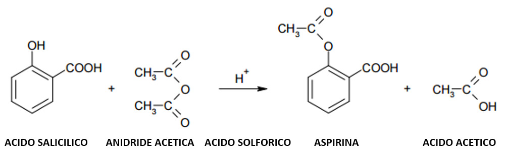
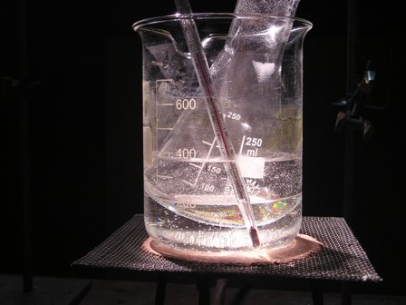
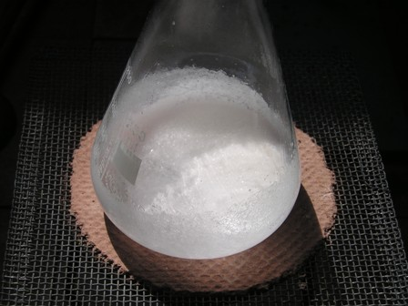
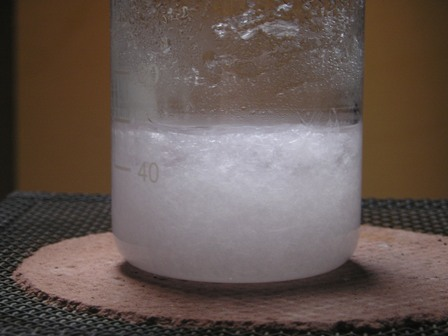
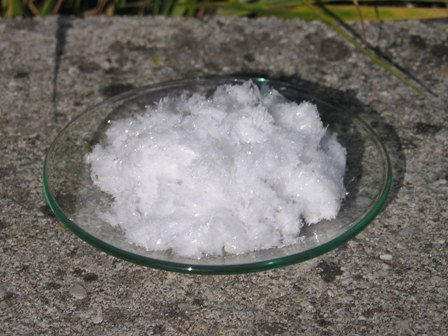

Ho riprovato dopo parecchio tempo la sintesi dell'Acido acetilsalicilico, ovvero del principio attivo della comune aspirina.
Ometto volutamente tutte le notizie riguardo il farmaco più diffuso nel mondo, che si possono trovare a profusione sul Web; mi soffermo invece come al solito sulla sintesi preparativa, che è facilissima, didattica e di soddisfazione per il bel prodotto che fornisce.
Ho curato particolarmente la fase di lavaggio/cristallizzazione, ottenendo "le più belle pastiglie di aspirina mai viste"; ciò naturalmente se si sa apprezzare anche l'aspetto "estetico" delle sostanze chimiche....bisogna avere un certo chemical-feeling...!
Tra le varie procedure reperibili in bibliografia (tutte molto simili) ho scelto quella di Garlaschelli, con lievissime modifiche, anche per l'ammirazione personale verso questo ottimo chimico/divulgatore dell'Università di Pavia.
Ecco la reazione di sintesi:

Materiale occorrente:
acido salicilico HO-C6H4-COOH
anidride acetica (CH3-CO)2=O
acido solforico H2SO4
etanolo
semplice vetreria
Porre 7 g di acido salicilico in una beuta da 250 ml e aggiungere 10 mL di anidride acetica e poi 7 gocce di acido solforico concentrato. Mescolare bene e porre la beuta col fondo immerso in un becker da 600 ml contenente un po' di acqua e scaldare a bagno maria a circa 60 °C agitando saltuariamente.

Dopo alcuni minuti la sospensione diviene perfettamente limpida (Foto 1); si continua a scaldare per un'altra decina di 10 minuti.
Facendo raffreddare, il liquido praticamente solidifica in una massa solida bianca.

Aggiungere quindi 100 ml di acqua fredda.Agitare bene il tutto rompendo il più possibile i grumi con una bacchetta di vetro (Foto 2) e quindi filtrare alla pompa su büchner, spremendo bene il solido e lavarlo tre volte con 15 mL di acqua per volta aspirando bene.

Sciogliere il solido così ottenuto in 18 ml di etanolo a caldo (si deve sciogliere tutto) e quindi versare in 40 ml di acqua calda. Riscaldare all'ebollizione se necessario fino a completa dissoluzione.Lasciar raffreddare lentamente: dalla soluzione si separano dei bei cristalli prismatici (Foto 3).
Filtrare su büchner e far asciugare all'aria. Se eseguita bene la procedura, il prodotto deve essere perfettamente inodoro, bianchissimo e ben cristallizzato (Foto 4). P.f. 136°
Ecco una sintesi che pur essendo semplice è anche didattica per chi è interessato alla chimica preparativa.
Nel vetrino qui sotto i soffici cristallini dell'Aspirina home-made, da non confondere con quelli, molto più blasonati ma anonimi, dell'Aspirin® Bayer.
